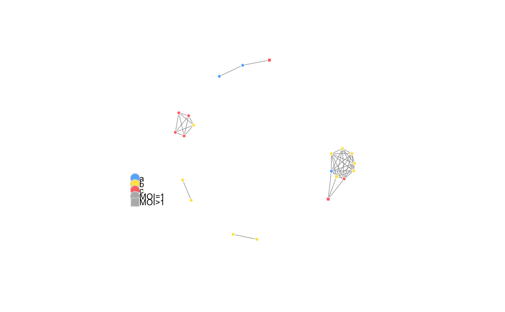

plotIBDclusters() Produces a figure of an isoRelate cluster network, where unique isolates are represented by vertices and a line is
drawn between two vertices if the isolates have been inferred IBD via the criteria specified in either getIBDiclusters or
getIBDpclusters.The networks are created using the R package igraph.
plotIBDclusters(ped.genotypes, clusters, groups = NULL, vertex.color = NULL, vertex.frame.color = "white", vertex.size = 4, vertex.name = FALSE, edge.color = "gray60", edge.width = 0.8, mark.border = "white", mark.col = "gray94", add.legend = TRUE, legend.x = -1.5, legend.y = -0.25, layout = NULL, return.layout = FALSE)
| ped.genotypes | A list containing 2 objects. See the |
|---|---|
| clusters | A named list of three objects containing network information.
See the |
| groups | A data frame with 3 columns of information:
Group ID, for example, can be the geographic regions where the isolates were collected.
If |
| vertex.color | A vector of characters or numeric values of the vertex colors in the network.
If |
| vertex.frame.color | Character string or numeric value. A single color that will be used as the vertex border. Default is |
| vertex.size | Numeric value indicating the size of the vertices in the network. Default is |
| vertex.name | Logical. Whether to add isolate names to the vertices. Default is |
| edge.color | Character string or numeric value. A single color to be used for all edges. Default is |
| edge.width | Numeric. A single value indicating the width of the edges. Default is |
| mark.border | Character string or numeric value. A single color to be used for all borders in hierarchical clustering groups. Default is |
| mark.col | Character string or numeric value. A single color to be used to fill hierarchical clustering groupings. Default is |
| add.legend | Logical. Whether to include a legend in the plot. Default is |
| legend.x | Numerical. A single value indicating the x-coordinate of the legend, with default |
| legend.y | Numerical. A single value indicating the y-coordinate of the legend, with default |
| layout | A matrix containing the x and y coordinates of the vertices, generated using the Fruchterman-Reingold force-directed layout. |
| return.layout | Logical. Whether or not to return the layout matrix (vertex positions) in the network.
This layout can be used as the input for the parameter |
getGenotypes, getIBDpclusters and getIBDiclusters.
# generate the isolates who are IBD over the Plasmodium falciparum CRT gene my_i_clusters <- getIBDiclusters(ped.genotypes = png_genotypes, ibd.segments = png_ibd, interval = c("Pf3D7_07_v3", 403222, 406317), prop=0, hi.clust = FALSE)#> Number of clusters = 5 #> Maximum cluster length = 9 #> Minimum cluster length = 2str(my_i_clusters)#> List of 3 #> $ clusters :List of 5 #> ..$ : chr [1:9] "PNG/PN0014-C" "PNG/PN0023-C" "PNG/PN0031-C" "PNG/PN0040-C" ... #> ..$ : chr [1:5] "PNG/PN0057-C" "PNG/PN0078-C" "PNG/PN0079-C" "PNG/PN0086-C" ... #> ..$ : chr [1:3] "PNG/PN0003-C" "PNG/PN0005-C" "PNG/PN0083-C" #> ..$ : chr [1:2] "PNG/PN0022-C" "PNG/PN0042-C" #> ..$ : chr [1:2] "PNG/PN0037-C" "PNG/PN0058-Cx" #> $ i.network:List of 10 #> ..$ :List of 1 #> .. ..$ PNG/PN0003-C:Class 'igraph.vs' atomic [1:1] 2 #> .. .. .. ..- attr(*, "env")=<weakref> #> .. .. .. ..- attr(*, "graph")= chr "81d92a55-84d2-42bd-bf2a-881108bbdd8f" #> ..$ :List of 1 #> .. ..$ PNG/PN0005-C:Class 'igraph.vs' atomic [1:2] 1 17 #> .. .. .. ..- attr(*, "env")=<weakref> #> .. .. .. ..- attr(*, "graph")= chr "81d92a55-84d2-42bd-bf2a-881108bbdd8f" #> ..$ :List of 1 #> .. ..$ PNG/PN0014-C:Class 'igraph.vs' atomic [1:8] 5 6 8 9 10 11 13 18 #> .. .. .. ..- attr(*, "env")=<weakref> #> .. .. .. ..- attr(*, "graph")= chr "81d92a55-84d2-42bd-bf2a-881108bbdd8f" #> ..$ :List of 1 #> .. ..$ PNG/PN0022-C:Class 'igraph.vs' atomic [1:1] 19 #> .. .. .. ..- attr(*, "env")=<weakref> #> .. .. .. ..- attr(*, "graph")= chr "81d92a55-84d2-42bd-bf2a-881108bbdd8f" #> ..$ :List of 1 #> .. ..$ PNG/PN0023-C:Class 'igraph.vs' atomic [1:7] 3 6 8 9 10 11 13 #> .. .. .. ..- attr(*, "env")=<weakref> #> .. .. .. ..- attr(*, "graph")= chr "81d92a55-84d2-42bd-bf2a-881108bbdd8f" #> ..$ :List of 1 #> .. ..$ PNG/PN0031-C:Class 'igraph.vs' atomic [1:7] 3 5 8 9 10 11 13 #> .. .. .. ..- attr(*, "env")=<weakref> #> .. .. .. ..- attr(*, "graph")= chr "81d92a55-84d2-42bd-bf2a-881108bbdd8f" #> ..$ :List of 1 #> .. ..$ PNG/PN0037-C:Class 'igraph.vs' atomic [1:1] 20 #> .. .. .. ..- attr(*, "env")=<weakref> #> .. .. .. ..- attr(*, "graph")= chr "81d92a55-84d2-42bd-bf2a-881108bbdd8f" #> ..$ :List of 1 #> .. ..$ PNG/PN0040-C:Class 'igraph.vs' atomic [1:8] 3 5 6 9 10 11 13 18 #> .. .. .. ..- attr(*, "env")=<weakref> #> .. .. .. ..- attr(*, "graph")= chr "81d92a55-84d2-42bd-bf2a-881108bbdd8f" #> ..$ :List of 1 #> .. ..$ PNG/PN0055-C:Class 'igraph.vs' atomic [1:7] 3 5 6 8 10 11 13 #> .. .. .. ..- attr(*, "env")=<weakref> #> .. .. .. ..- attr(*, "graph")= chr "81d92a55-84d2-42bd-bf2a-881108bbdd8f" #> ..$ :List of 1 #> .. ..$ PNG/PN0055-Cx:Class 'igraph.vs' atomic [1:7] 3 5 6 8 9 11 13 #> .. .. .. ..- attr(*, "env")=<weakref> #> .. .. .. ..- attr(*, "graph")= chr "81d92a55-84d2-42bd-bf2a-881108bbdd8f" #> ..- attr(*, "class")= chr "igraph" #> $ hi.clust : logi FALSE# creating a stratification dataset my_groups <- png_genotypes[[1]][,1:3] my_groups[1:10,"pid"] <- "a" my_groups[11:25,"pid"] <- "b" my_groups[26:38,"pid"] <- "c" # plot the network of clusters plotIBDclusters(ped.genotypes = png_genotypes, clusters = my_i_clusters, groups = my_groups, vertex.color = NULL, vertex.frame.color = "white", vertex.size = 4, vertex.name = FALSE, edge.color = "gray60", edge.width = 0.8, mark.border = "white", mark.col = "gray94", add.legend = TRUE, legend.x = -1.5, legend.y = -0.25, layout = NULL, return.layout = FALSE)# generate the isolates who share at least than 90% of their genome IBD my_p_clusters <- getIBDpclusters(ped.genotypes = png_genotypes, ibd.segments = png_ibd, prop=0.9, hi.clust = FALSE)#> Number of clusters = 3 #> Maximum cluster length = 3 #> Minimum cluster length = 2# plot the network of clusters plotIBDclusters(ped.genotypes = png_genotypes, clusters = my_p_clusters, groups = my_groups, vertex.color = NULL, vertex.frame.color = "white", vertex.size = 4, vertex.name = FALSE, edge.color = "gray60", edge.width = 0.8, mark.border = "white", mark.col = "gray94", add.legend = TRUE, legend.x = -1.5, legend.y = -0.25, layout = NULL, return.layout = FALSE)